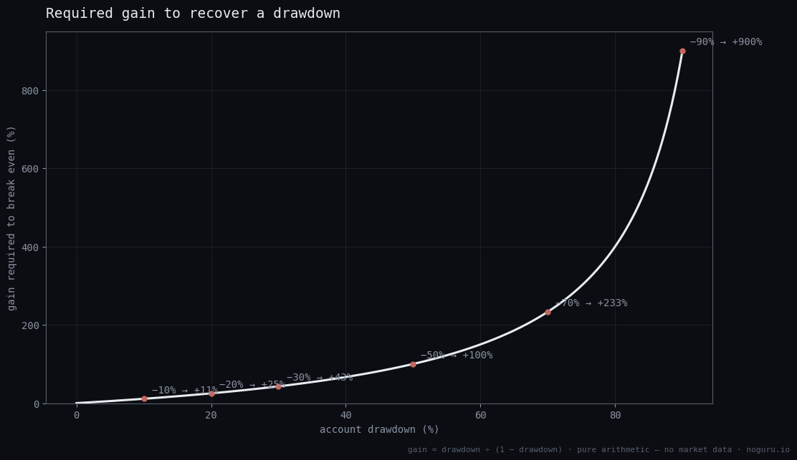

Trading Academy · Module 1 — Why slow wins · Lesson 1/4 · Lesson 1 of 22 in the curriculum · ~7 min read
The arithmetic of losses
Lose 30% of your account and you need 43% — not 30% — just to get back to even. That asymmetry is not a slogan; it is division. It is also the single most important piece of arithmetic in trading, and every rule in this academy exists because of it.
Find something on this page
Read this lesson in context
This is the original free lesson. Its hypothetical examples teach general trading concepts. References to futures, stops, other strategies or older track-record formats are not statements of NoGuru’s current spot configuration.
Public reading
+100% the gain required to erase a 50% loss — not the 50% most people guess. The table below runs the same division at six other drawdowns.
Ask a new trader what gain undoes a 30% loss and most will say 30%. It isn't, because after the loss you are working from a smaller account: the road back is longer than the fall. The whole relationship fits in one line:
required gain = drawdown ÷ (1 − drawdown)
| You lose… | You need… | What that feels like |
|---|---|---|
| 10% | +11% | an inconvenience |
| 20% | +25% | a bad stretch you can absorb |
| 30% | +43% | months of disciplined work |
| 50% | +100% | you must now double your account |
| 70% | +233% | most traders never come back from here |
| 90% | +900% | a 10× — effectively starting over |

Look at the shape, not the numbers. Losses under roughly 20% sit on the flat part: annoying, recoverable, survivable many times over. Past 50%, the curve turns vertical — each extra percent lost adds many percent to the bill. The market does not care that this feels unfair. Division does not negotiate.
Now connect it to leverage. At 20× leverage, a 5% move against you does not put you 5% down — it wipes the position's entire margin. Major cryptocurrencies routinely move several percent in an ordinary day, on no news at all. A 20× position rarely loses to bad analysis; it loses to a Tuesday.
This is why "slow" is not a temperament choice on this site — it is the strategy. If you never take the big hit, you never owe the vertical part of the curve. Everything else in this academy — position sizing, portfolio heat, correlation — is machinery for staying on the flat part.
Try the numbers yourself with the free drawdown & recovery calculator : enter any loss, see the bill, and see how long repayment takes at a monthly pace you choose.
Leverage, liquidation, and an ordinary Tuesday →
Original source risk note
Trading cryptocurrencies involves substantial risk of loss and is not suitable for every investor. The academy teaches method and arithmetic — it does not and cannot promise trading results. Nothing here is investment advice.